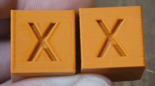

Когда в 3D-принтер вставляется новый филамент, характеристики которого в применении к текущему принтеру неизвестны, лучше всего вначале откалибровать настройки печати.
Самые простые и быстрые калибровки делаются путем печати специальных моделей:
Существуют и другие методы проверки 3D-печати, но эти методы основные.
Чтобы получить калибровочные модели для печати, существует сайт:
https://teachingtechyt.github.io
Итак, как надо калибровать 3D-принтер?
Baseline Print - базовая печать
Вначале надо напечатать кубик XYZ на первых имеющихся настройках. Это необходимо сделать для того, чтобы после определения всех настроек напечатать его снова и сравнить качество.
Брать модель кубика XYZ предлагается отсюда:
https://teachingtechyt.github.io/calibration.html#baseline
Кубик "до" и "после" будет выглядеть примерно так:

Для генерации модели надо будет указать несколько параметров:
Многие параметры можно оставить без именений, по-умолчанию. Некоторые параметры можно подсмотреть в слайсере, через который обычно происходит нарезка и печать.
Для некоторых принтеров рекомендуется указать Additional start gcode и Additional end gcode, если они известны для данной модели.
В общем, при нажатии Download Gcode, будет закачан G-код модели кубика. Его можно открыть в слайсере, посмотреть как он будет печататься (чтобы не ошибиться с позиционированием), и отправить на печать.
Temperature Tuning - настройка температуры
Настройка температуры происходит с помощью температурной башни.
По сути, надо сделать